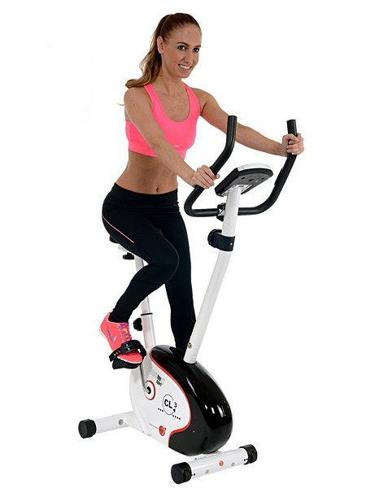
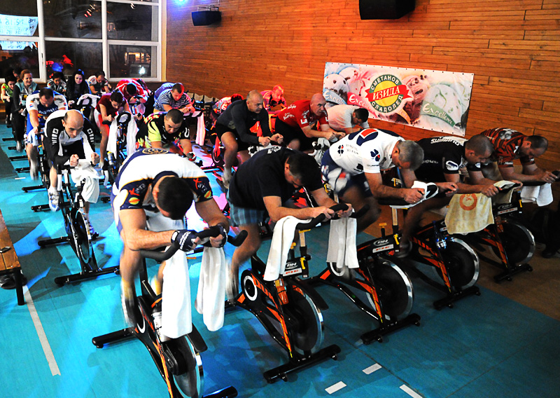

Аеробни тренировки
Аеробна тренировка. Какво представлява? Представете си, че се тренирате. Потите се, дишате учестено, сърцето ви бие усилено, кръвта циркулира по-бързо, за да достави кислород до мускулите и това продължава повече от няколко минути – тази дейност се нарича аеробно упражнение. Аеробно е всяко упражнение, което сте в състояние да извършвате в продължение на поне няколко минути, докато сърцето, белите дробове и мускулите работят извънредно. В тази статия ще научите какви са механизмите на аеробните упражнения; каква е ролята на кислорода, сърцето и мускулите; какви са ползите от аеробните упражнения и др.
Всичко започва с дишането. Средно здравият човек вдишва и издишва около 7-8 литра въздух в минута. Когато изпълните дробовете си с въздух, кислородът от него (въздухът съдържа около 20% кислород) се филтрира в бронхите, докато достигне до алвеолите. Алвеолите представляват малки мехурчета, с помощта на които кислородът навлиза в кръвта. След като вече е попаднал в кръвта (чрез така наречените коронарни артерии), кислородът достига до сърцето .
За да функционира правилно, човешкото сърце има нужда от постоянен приток на кислород, който белите дробовете му осигуряват. С всеки удар сърцето изпомпва определено количество кръв, обогатена с кислород и хранителни вещества към останалите органи в тялото. Сърцето на здрав възрастен човек изпомпва около 5 литра кръв в минута. Средната честота на сърдечния ритъм е 60-80 удара в минута, 100,000 удара на ден, над 30 милиона удара годишно и около 2.5 милиарда удара за живот с продължителност 70 години!
Количеството кислород, което мускулите извличат от кръвообращението играе важна роля при физическите натоварвания. Това количество се измерва с мл/кг/минута (милилитър на килограм телесна маса). Мускулите ни приличат на автомобилни двигатели, които се задвижват с помощта на гориво – двигатели, които използват мазнини и въглехидрати вместо бензин. Кислородът е ключов елемент при изгарянето на мазнините и въглехидратите. Колкото повече кислород достигне до мускулите, толкова повече гориво ще произведем. А колкото повече гориво произведем, толкова повече енергия ще имаме, за да тренираме по-дълго.
Видове аеробни тренировки
Аеробни тренировки с ниска интензивност
Каланетика - всяко упражнение е насочено към определена част на тялото - ханша, бедрата, талията. Чрез точно определени движения, които понякога се повтарят до 100 пъти, се въздейства върху дълбоката мускулатура. Натоварват се цели групи от мускули.
Фет-бърнинг йога - бавна поредица от упражнения с изключително разтягащ характер и специфично изотонично изтощение, тонизиращо мускулатурата много добре. Провежда се в групи, в много топла зала.
Пилатес - бавна поредица от упражнения с изключително разтягащ характер и специфично изотонично изтощение, тонизиращо мускулатурата много добре. Провежда се в групи, в много топла зала.
Аква сайклинг/спининг - бавна поредица от упражнения с изключително разтягащ характер и специфично изотонично изтощение, тонизиращо мускулатурата много добре. Провежда се в групи, в много топла зала.
Модетика - бавна поредица от упражнения с изключително разтягащ характер и специфично изотонично изтощение, тонизиращо мускулатурата много добре. Провежда се в групи, в много топла зала.
Трениране с велоергометър - бавна поредица от упражнения с изключително разтягащ характер и специфично изотонично изтощение, тонизиращо мускулатурата много добре. Провежда се в групи, в много топла зала.
Тай-чи - бавна поредица от упражнения с изключително разтягащ характер и специфично изотонично изтощение, тонизиращо мускулатурата много добре. Провежда се в групи, в много топла зала.
Фитбол - бавна поредица от упражнения с изключително разтягащ характер и специфично изотонично изтощение, тонизиращо мускулатурата много добре. Провежда се в групи, в много топла зала.
Аеробни тренировки с висока интензивност
Степ аеробика - При тази разновидност на аеробиката се използва специална платформа, която допълнително натоварва мускулите на седалището и бедрата. Степ аеробиката е с по-голяма интензивност на натоварването от класическата аеробика, поради това че има множество движения свързани с качване и слизане от стъпало - степ. При степ аеробиката се използват стъпки подобни на класическата аеробика, като могат да се включат и елементи от различни танци и удари от бойните изкуства, упражнения за сила и др. Степента на натоварване при степ аеробиката зависи от височината на степ платформата, продължителността на упражняване и скоростта - като за един час се изгарят между 300-400 ккал. Степ аеробиката гори калории, развива издръжливост, тренира сърцето и помага за развиване на координацията и баланса.
Денс аеробика - Това е популярна форма на аеробика, която включва хореография от различни стилове танци като балет, латино, хип-хоп, диско и др. Денс аеробиката е динамичен и забавен начин за поддържане на добра форма, който съчетава изгарянето на мазнини с развитието на гъвкавост и пластичност. Програмата обикновено включва 5-10 мин. загряване, 20-30мин. кардио част с елементи от танци, 20 мин. упражнения за гъвкавост и 5-10 мин. разпускащи упражнения и стречинг. С развитието на този стил се появяват много разновидности и вариации съчетаващи различни стилове танци и предлагащи различна интензивност и трудност на комбинациите.
Кик-бокс аеробика - Една от най-ефективните форми на аеробиката за отслабване. В своите различни вариации е съчетание между аеробика и движения и удари от кик-бокса. В този метод на тренировка се използват автентични кик-бокс техники, като едновременно се работи сърдечно-съдовата система и мускулите на цялото тяло. Типичната техника на аеро кик-бокса включва многократно повтарящи се удари с ръце, ритници и движения за самозащита. Чрез такъв тип тренировка се изгарят калории, подобрява се координацията и цялостното фитнес ниво. Съществуват различни стилове съчетаващи бойните изкуства и аеробиката като тае-бо, капоейра, аеро комбат, боди комбат и др.
Водна аеробика - Този тип аеробика, позната още като аква аеробика, се извършва в басейн с ниво на водата до врата или кръста. Водната среда превръща аква аеробиката във високоефективна форма на двигателна активност, която същевременно е приятна и не натоварва ставите. Това е свързано с факта, че водата оказва значително съпротивление при движение, а благодарение на подемната и сила и плавността на движенията, ставите се натоварват значително по-малко. За да се практикува водна аеробика не задължително да умеете да плувате или да имате някаква допълнителна подготовка. Аква аеробиката е много по-щадящ за тялото вариант и може да се практикува от широк кръг от хора, включително бременни жени, хора с наднормено тегло, хора с ортопедични проблеми, възрастни и др. Заради съпротивлението на водата чрез водната аеробика се изгарят много калории (400-600 ккал), което я прави много ефективен метод за отслабване. В различните съчетания могат да се използват и специални уреди за водна гимнастика.
Спортна аеробика - Този тип аеробика, познат още като аеробна гимнастика, е високоинтензивна форма включваща съчетание от движения с висока прецизност и сложност на фона динамична музика. Спортната аеробика включва елементи от аеробиката, спортната акробатика и гимнастиката, съчетани в обща хореография. Аеробната гимнастика изгражда комплексно множество качества като сила, издръжливост, гъвкавост, координация и баланс в комбинация с артистичност и креативност.При аеробните упражнения пулсът се ускорява с между 60 и 90 %! Най-простия начин да определите вашата максимална сърдечна честота е да извадите годините от числото 220. Или: от 220 – (годините ви) = (пулса). За по-голяма яснота, 220-29 = 191! За да определите вашият аеробен диапазон, умножете максималната сърдечна честота по 60 % и отново, но този път по 90 %. Или (ако сте на 29 години), 29 години умножено по 60 % = 114.6 и 29 умножено по 90% = 171. 9.
Популярни фитнес и аеробик класове
Spining (Спининг) - Спинингът е групово аеробно занимание, водено от инструктор, практикувано на специални статични колела наречени спинери. Това е интервална тренировка, при която и хореографията цели да имитира каране на велосипед в пресечена местност с различна интензивност - спускания, изкачвания, спринтове. Спинингът е предпочитана кардио тренировка, поради факта че се изгарят между 500-800 ккал за час. Спинерът може да присъства и като уред в различни комбинирани кардио програми.
Body Shaping (Боди шейпинг) - Стил, който е с ниска до средна интензивност и може да включва разнообразни упражнения с цел стягане на мускулите, оформяне и изгаряне на мазнини. Боди шейпинг системата е насочена специално към жените и техните проблемни зони - ханш, бедра, седалище. В първата си част, тренировката включва елементи от класическата аеробика - с цел изгаряне на мазнини, а във втората се използват специални гимнастически упражнения за отделните части от тялото - с цел стягане на мускулите. В шейпинг тренировката могат да се използват различни гирички, тежести, степ платформа, фитбол топки и др., с цел постигане на оптимален резултат.
Body pump (Боди пъмп) - Система, която е запазена марка на LES MILLS, използваща леки щанги, тежести и степ платформа в цялостна фитнес-аеробик програма. За разлика от другите системи, които са предимно насочени към жените, боди пъмп системата е универсална и се практикува и от двата пола. Тежестите са подбират индивидуално, а упражненията обхващат всички мускулни групи. Боди пъмп системата вкарва фитнеса в залата за аеробика и групови занимания. Чрез нея се развива едновременно мускулна сила, издръжливост и се изгарят калории, поради което тя е подходяща за поддържане на цялостна фитнес форма.
Port De Bras (Порт де бра) - Стил включващ танцови елементи и гимнастика в бавен темп, на фона на релаксираща музика. Разработен от Хулио Папи и Владимир Снежик този стил свързва фитнеса, танца и психическата релаксация с цел цялостно подобряване на физическото и емоционалното здраве. Този стил акцентира върху правилното дишане, плавните движения, контрола върху тялото и баланса между психиката и тялото. Порт де бра е един от новите нискоинтензивни стилове - body&mind, чрез който съвременния човек може да противодейства на вредностите от натовареното ежедневие.
Combo, Mix (комбинирани стилове) Освен стиловете, който са запазена марка и следват точно определена методика на тренировка съществуват и такива, който комбинират различни стилове и елементи. При тях може да се очаква почти всичко, а самата тренировка е до голяма степен подчинена на възгледите на инструктора. Това дава възможност да се разнообрази до голяма степен програмата на едно аеробик студио, с множеството комбинации между различни видове аеробика и гимнастика. В голяма част от случаите комбинираните стилове включват аеробика и упражнения за различните мускулни групи с цел по-цялостно въздействие.